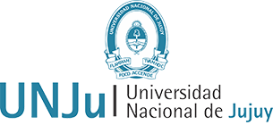

Inicio
¿Que es la Programacion?
La programacion es el proceso de crear instrucciones para que una
computadora realice tareas especificas.
Existen distintos
tipos de lenguajes para programar:
¿Que es Java
Java es un lenguaje de programación de alto nivel y orientado a
objetos desarrollado.
Se destaca por su portabilidad, lo
que significa que los programas escritos en Java pueden ejecutarse
en cualquier plataforma que tenga un entorno de ejecución Java (JRE)
instalado. Esto se logra gracias a la máquina virtual Java (JVM).
Java presenta las siguientes caracteristicas:
| Orientado a Objetos | Simplicidad | Portabilidad |
| Es un lenguaje completamente orientado a objetos. | Se diseño para ser facil de aprender y usar. | Se puede ejecutar en cualquier plataforma que tenga JVM. |
Aula Virtual
¿Te intereso?
En la Universidad Nacional de Jujuy, tienes la oportunidad de aprender a programar a traves de la carrera de 'Analista Programador Universitario'
